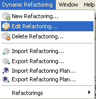
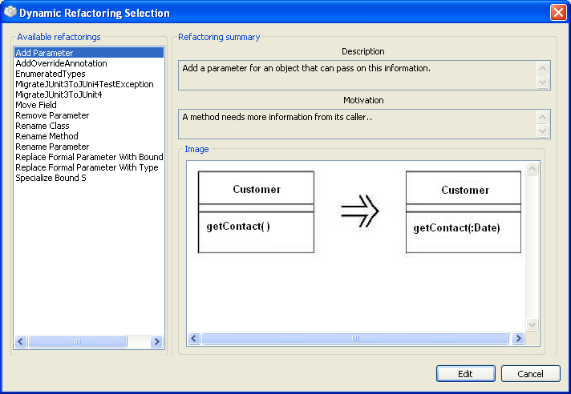
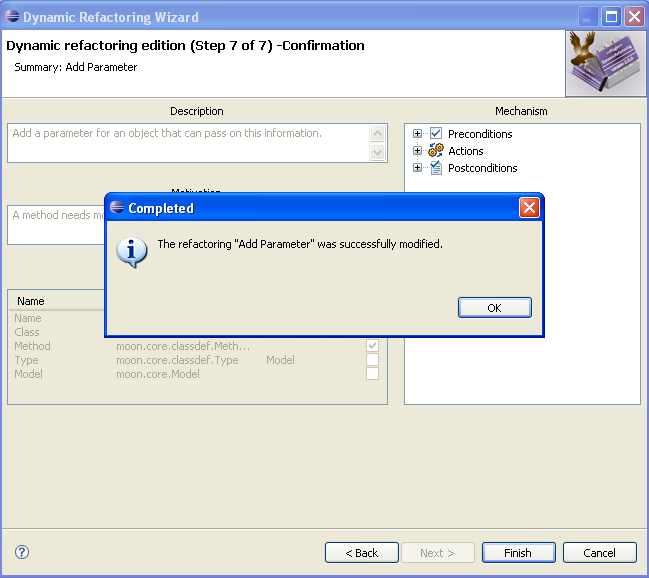

Editing Refactorings
Editing Refactorings
In this section you will learn how to modify an existing dynamic refactoring from the set
of available refactorings.
-
Inside Eclipse select the menu item Dynamic Refactoring > Edit
Refactoring... to open the Refactoring Edition dialog.

Menu item "Edit Refactoring..."
-
A list with the available dynamic refactorings will show up. Select the one you would like to modify. As you
select the refactorings on the list on the left, you will see a brief summary containing its description and
motivation, as well as an associated image if there's one, on the right side of the dialog.

Available refactorings
-
Once you have selected the refactoring for edition, you will have to go through a step-by-step wizard that
will guide you through the editing process. The wizard is identical to the one used for refactoring creation,
only this time fields will have already been filled in with the information associated to the refactoring
that is being edited.
See the Creating refactorings section for more detailed info on how to
fill in the wizard's fields.
-
On the seventh step, pushing the
Finish button will save any changes performed on the refactoring.
A confirmation message will tell you if the refactoring could be successfully saved.

Refactoring modified